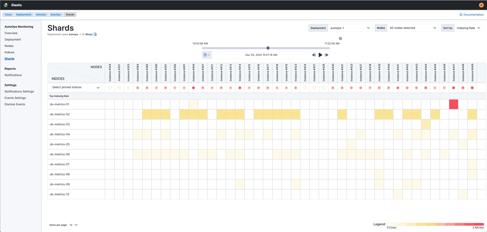

Shardsedit
The Shard View allows you to manage and monitor shards allocated to each node, ensuring optimal performance and reliability of your search and indexing operations.

The Shard View provides:
- Detailed Shard Breakdown: Gain insights into each shard with a granular breakdown. View stats for shards from specific indices on any given node, allowing for in-depth performance and distribution analysis.
- Size Information: Quickly assess the storage footprint of each shard with precise size metrics, facilitating efficient resource management.
- Document Count: Monitor the number of documents contained within each shard to track and manage the shard load effectively.
- Indexing Rate and Latency: Keep an eye on indexing performance with real-time indexing rates and latencies. This ensures efficient and timely data indexing, helping maintain optimal performance.
- Search Rate and Latency: Optimize search functionalities by monitoring search rates and latencies. This ensures your search queries are processed quickly and effectively.
You can get different views using the sorting fields:
- Index Latency
- Indexing Rate/Sec
- Merge Latency
- Merge Rate/Sec
- Search Latency
- Search Rate/Sec
- Size in Bytes
Use the slider on the top right side of the metrics table to move forward and backward in time to view how shards data changes.